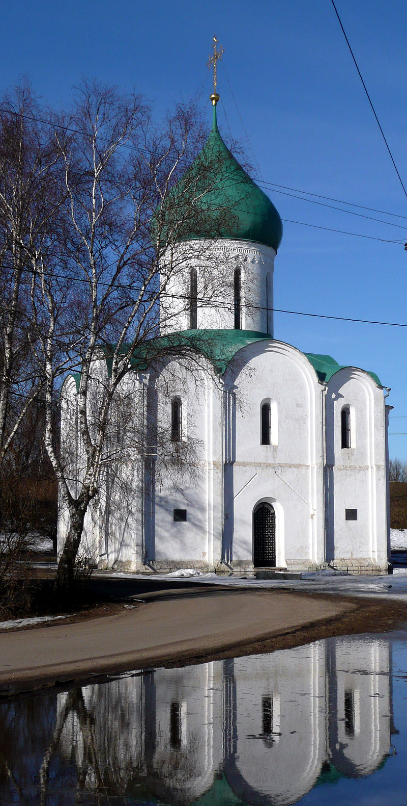

Переславль-Залесский
Переславль-Залесский. Спасо-Преображенский собор Город находится на берегу живописнейшего Плещеева озера, вокруг которого расположен одноимённый национальный парк. В озере обитает переславская ряпушка, занесённая в красную книгу, которая подавалась к царскому столу. В 2 км к северо-западу от города находится археологический памятник «Клещинский комплекс», центром комплекса является древний город Клещин, от которого сохранились валы XII века. Сохранился объект поклонения язычников — огромный тёмно-синий валун весом в 12 тонн. По берегам озера расположены святые источники — Никитский, Варварин, Ключ Гремяч. На Плещеевом озере Пётр I начинает строительство «потешной флотилии», ставшей колыбелью российского военно-морского флота. В городе множество музеев, наиболее известные из которых — Переславский историко-архитектурный и художественный музей-заповедник, музей-усадьба «Ботик Петра I» (с 1803, первый провинциальный музей России), где сохранился ботик «Фортуна», музеи утюга, чайников, в 20 км от Переславля в посёлке Талицы находится переславский музей узкоколейки. В городе — шесть монастырей, четыре действуют:
Горицкий монастырь (закрыт в 1744 году, музей)
Никитский монастырь
Никольский монастырь
Свято-Троицкий Данилов монастырь
Сретенский Новодевичий монастырь (закрыт в 1764 году)
Феодоровский монастырь
Исторический центр Переславля окружён земляными валами XII в, единственными в России, почти полностью сохранившимися.